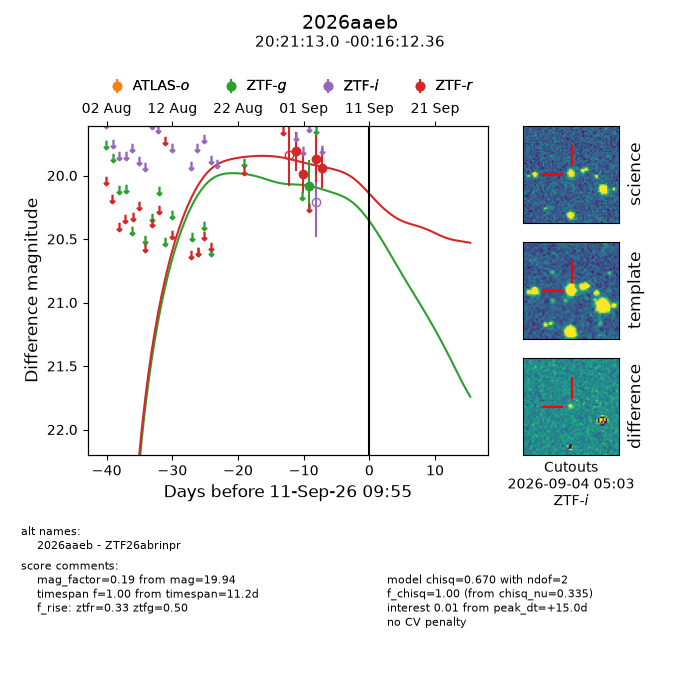
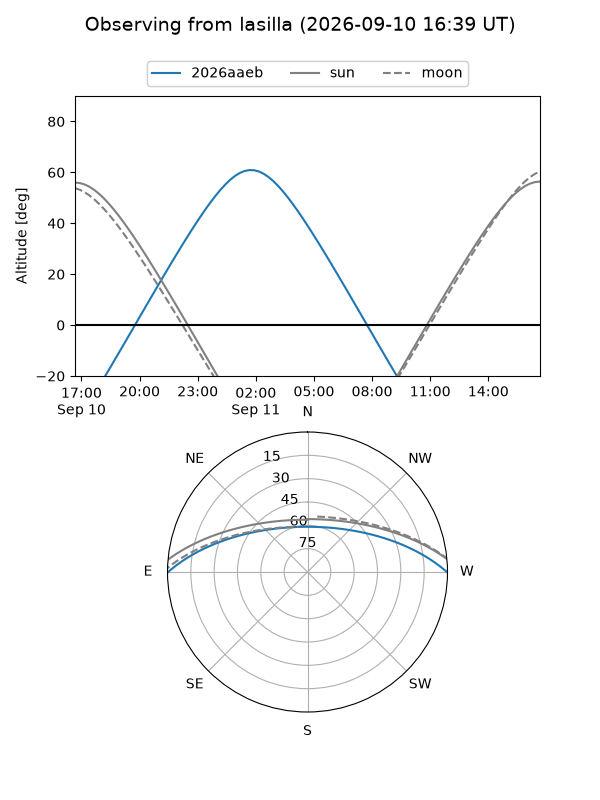
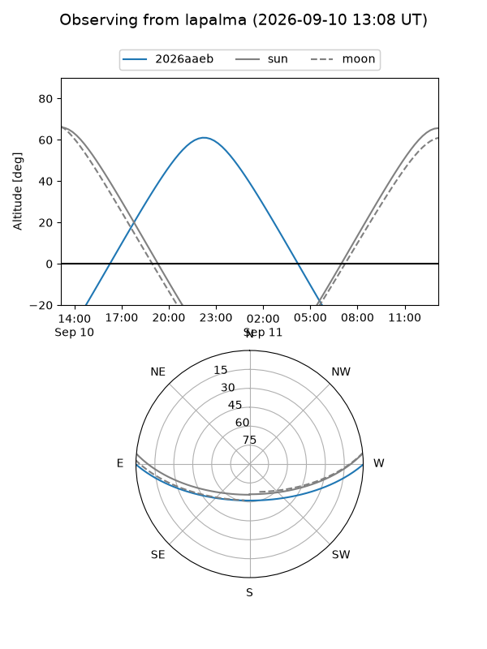
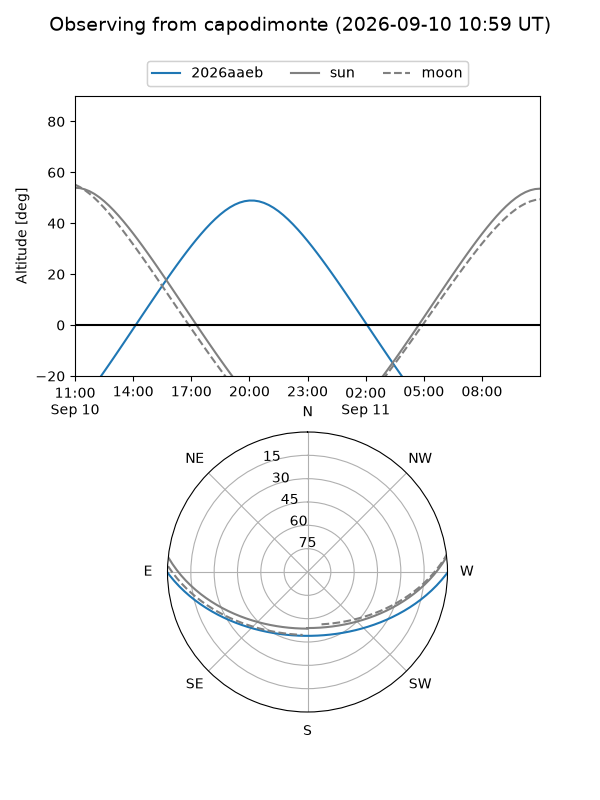
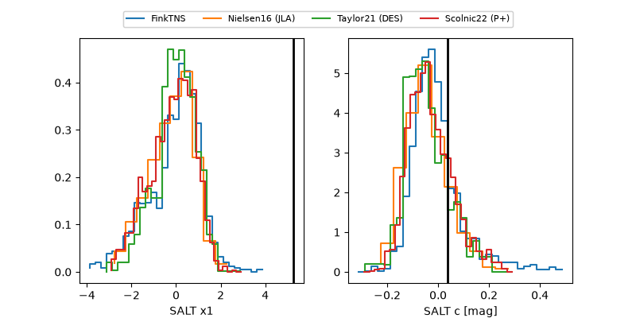

2026aaeb
Target 2026aaeb at 2026-09-11 09:57
Aliases and brokers:
FINK-ZTF: ztf.fink-portal.org/ZTF26abrinpr
Lasair-ZTF: lasair-ztf.lsst.ac.uk/objects/ZTF26abrinpr
ALeRCE-ZTF: alerce.online/object/ZTF26abrinpr
YSE-PZ: ziggy.ucolick.org/yse/transient_detail/2026aaeb
TNS name: wis-tns.org/object/2026aaeb
Direct TNS query: direct search
alt names
ZTF26abrinpr (ztf,fink_ztf)
2026aaeb (tns,yse)
Coordinates:
equatorial (ra, dec) = 305.3043,-0.27010
equatorial (HMS+DMS) = 20:21:13.02,-00:16:12.36
galactic (l, b) = (43.3478,-19.99493)
Flags:
TNS type: nan
peak dt: +15.0
Photometry:
last ztfg=20.08, ztfr=19.94
1 ztfg, 4 ztfr detections
Lightcurve

Visibility



Additional plots
